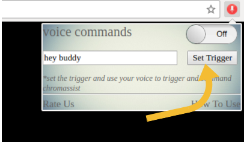

The time of using your mouse to control your browser is gone. We present your own assistant, Chromassist. Use your voice to open websites, to search on google. When you have no one to talk you can talk to Chromassist. you can have fun with her. She can sing and can crack some funny jokes.
What's New in Chromassist 2.1
This Update is a major update of "Chromassist - Your Personal Assistant" We are Giving you Two new Commands to use on your tabs.
- Want to open a website just speak the trigger and tell chromassist the name of website
- Want to reload the page just say "'your trigger' reload or refresh this page or tab
- Liked a page and want to add this in you bookmarks just tell your assistant you like this page and she know what to do now
What's New in Chromassist 2.0.5
Now no need to wait for "YES Sir" make your commands in a phrase.WE are reducing the responce time. Like
- Want to open a website just speak the trigger and tell chromassist the name of website
- Want to open a new tab say "'your trigger' open new Tab"
- want to close the tab say "'your trigger' close this Tab"
- To Exit the browser Say "'your trigger' Exit"
- Want to close other tabs say "'your trigger' close other tabs"
- Want to go next tab say "'your trigger' next tab"
- Want to go previouse tab say "'your trigger' previouse tab"
Using the Trigger
We are introducing a latest feature in chromassist. you can set your own trigger which you will use to trigger chromassist.
Change the Wallpaper
You can change the background of chromassist as you Need. Just Go on the "Change Background". Lets See chromassist with some beautiful images
Default
After Change
After Change
Use your Voice to talk
Now use your voice to control your browser. The time of using your mouse to control your browser is gone. We present your own assistant, Chromassist. Use your voice to open websites, to search on google. When you have no one to talk you can talk to Chromassist. you can have fun with her. She can sing and can crack some funny jokes. For Example to open youtube simply say Open Youtube, or you want to search something on google just speech that thing and Chromassist will directly search that thing for you. if you want to close the tab just say "close this tab". to keep only one "close other tabs" Tell her your name and she will remind your name. Please allow the mic first.
Commands
some Commands that you can use to make you browsing simpler
Some Basic Commands
Here is a list that you can use ( use your trigger before giving commands).
- Want to open a website just speak the trigger and tell chromassist the name of website
- Want to open a new tab say "open new Tab"
- want to close the tab say "close this Tab"
- To Exit the browser Say "Exit"
- Want to close other tabs say "close other tabs"
- Want to go next tab say "next tab"
- Want to go previouse tab say "previouse tab"
And you don't need to stick with these commands try using chromassist as you want.
Tell Chromassist your name
Speak up your name and She'll learn your name. Like Say I am Bob. and now she knows your name....
Speak to Search
Are you fad up of writing in search boxes...Let's End up your problem.
Want to Seach on google Just speak up your stuff and she will simply search on google.
want to search on youtube just add "on youtube" after your stuff and you are there.